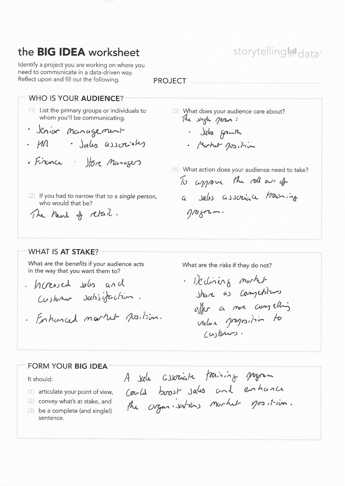

Chapter 2 Understand the context
2.1 Exercise 1.1: get to know your audience
This exercise presents a specific HR based scenario where you are a data analyst and asks for three ways you could get to know your audience (a new head of HR) better.
I would try the following:
Speaking to colleagues who have already met the new head of HR.
Reading any publicly available reports, blogs etc. the new head of HR has written.
Scheduling a meeting with the new head of HR.
I would focus on trying to address the following questions:
What does the new head of HR perceive to be the major challenges facing the organization?
What are the professional interests of the new head of HR and what is their background? Has their career taken them from specialist in a specific area to a more generalist role?
Why has this specific person been hired for the role of head of HR? Why now? What are the organizational drivers for needing some one with their specific skill-set, vision and approach.
2.2 Exercise 1.2: narrow your audience
This exercise presents another scenario, this time you work as an analyst for a national retailer. This time focus on understanding the audience for findings of a survey of shoppers who have bought ‘back-to-school’ products.
Question 1: Potential audiences who could be interested in the survey data include:
Within the organisation:
Various head office departments/functions (marketing, finance, purchasing …).
People working within retail stores.
Beyond the organisation:
Audiences similar to those identified above (within the organisation) but at competitors.
Trade journals/press.
Policy-makers in areas that intersect with schools (education, transport, sport …).
Teachers and other educational providers.
Question 2: Potential audiences who would care about the findings of the survey results:
Core strategic functions within the organisation - strategy, marketing and finance.
Management teams within the organisation’s stores
Core strategic functions within competitor organisation - strategy, marketing and finance.
Question 3: Potential audiences for the finding that sales associates are the main drivers of customer dissatisfaction.
The head office Finance and HR functions.
Store managers.
2.3 Exercise 1.3: complete the Big Idea worksheet
